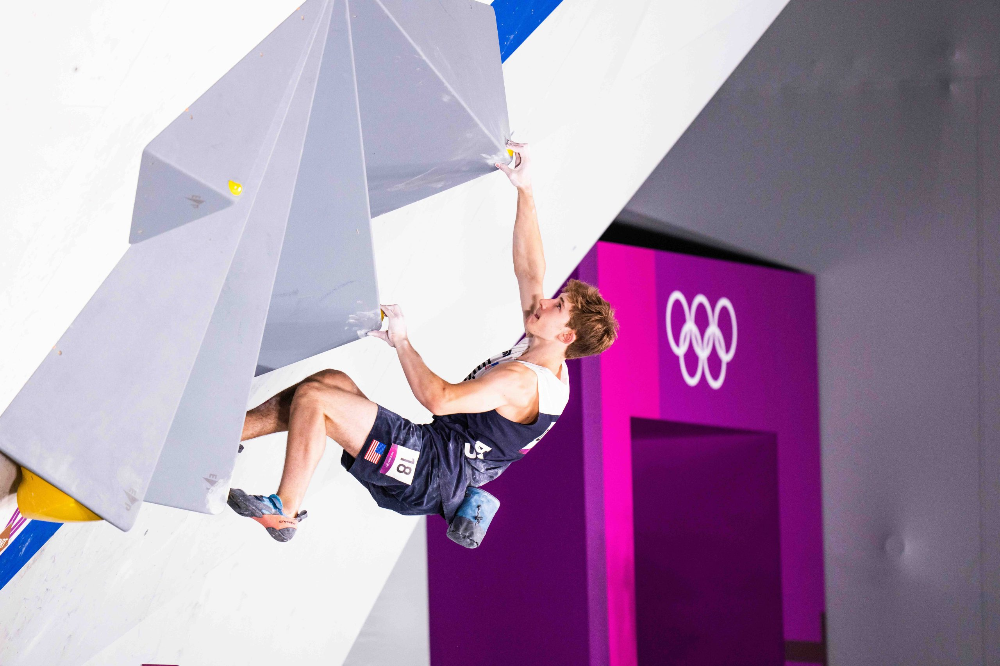
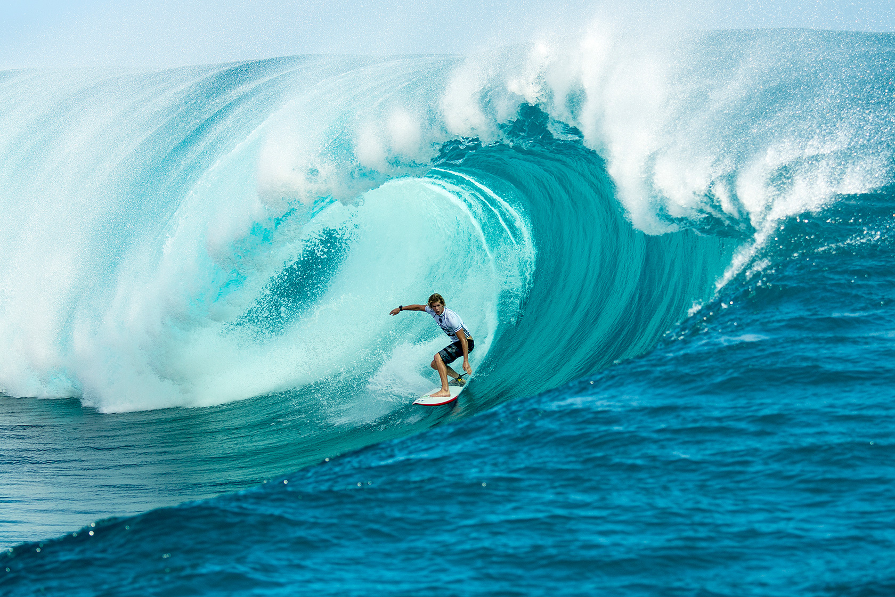
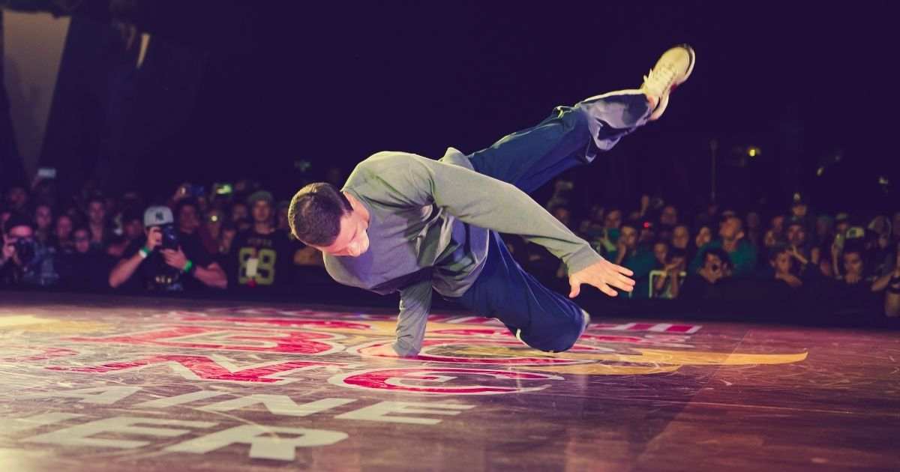
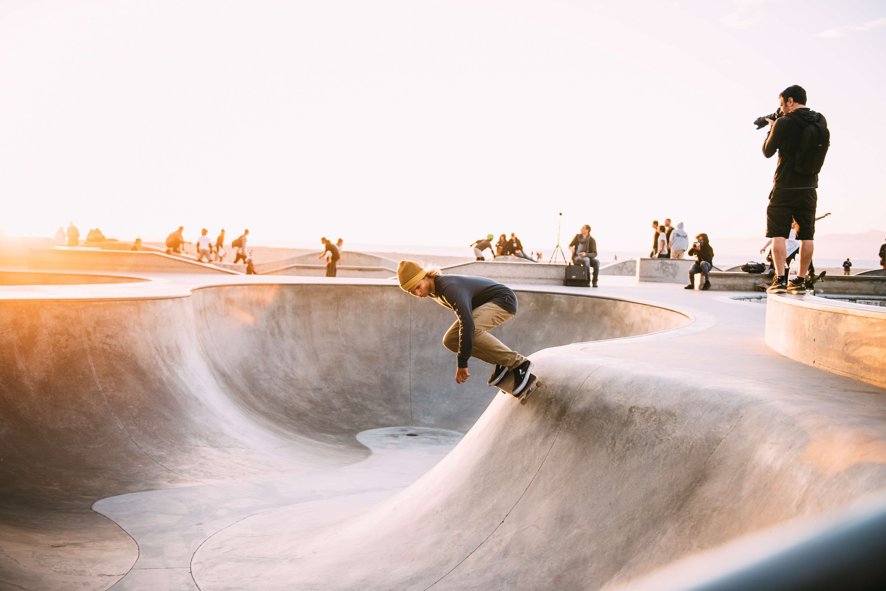
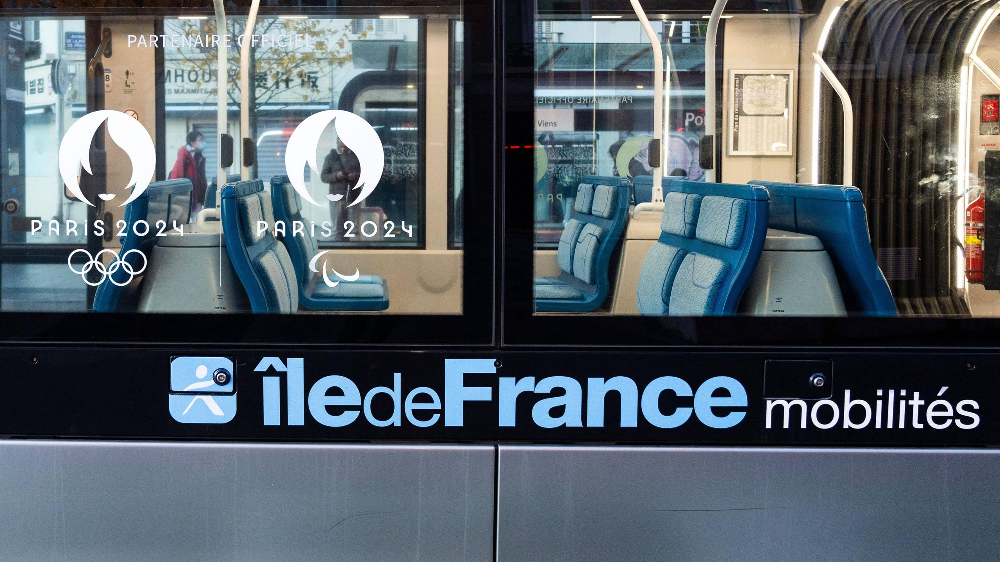
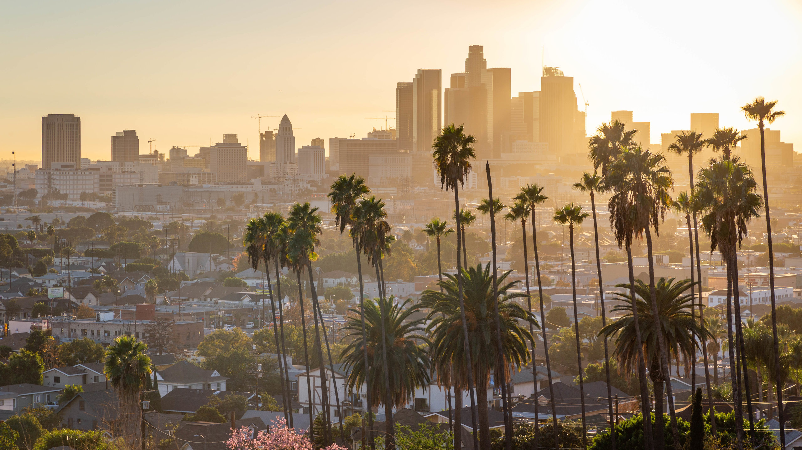

Epreuves.&.Transports
Nouveaux Sports Olympiques pour Paris 2024 : Un Vent de Modernité
Dans un effort de rendre les Jeux Olympiques de Paris 2024 plus accessibles, diversifiés et captivants pour les nouvelles générations, la France a intégré des disciplines sportives modernes et populaires. En plus de conserver l’escalade, le surf et le skateboard, des sports déjà présents aux Jeux précédents, un nouveau venu fait son apparition : le breaking. Ces sports, réputés pour leur dynamisme et leur popularité croissante, apporteront une nouvelle énergie aux Jeux, en attirant un public jeune et en phase avec les tendances actuelles. Avec un focus sur l'inclusion de jeunes athlètes, Paris 2024 promet d'être une édition innovante qui allie tradition et modernité.
Escalade : L’Ascension Spectaculaire au Complexe Sportif du Bourget

L’escalade, un sport qui fait appel à la force physique, à la concentration mentale et à la précision, a rapidement gagné en popularité ces dernières années. Le Comité Olympique a donc décidé de maintenir cette discipline dans les JO de Paris 2024. Le Complexe Sportif du Bourget, spécialement aménagé pour l'événement, sera le théâtre des épreuves d’escalade. Ce site sera équipé de six murs d’escalade de 15 mètres de haut, divisés en trois murs pour l’entraînement et trois pour les compétitions. Cette infrastructure moderne permettra aux athlètes de s’exprimer dans des conditions optimales, tandis que les spectateurs pourront suivre les prouesses des grimpeurs dans une ambiance passionnante.
L'escalade aux JO, c’est la promesse d’épreuves palpitantes, ou la stratégie et la force s’allient à une gestion minutieuse du stress pour atteindre les sommets. Les murs, tout comme les athlètes, sont un défi à surmonter, rendant chaque compétition unique et mémorable.
Bus desservants aisément le site, facilitant l’accès au public et garantissant une affluence optimisée lors des compétitions :
• 133
• 144
• 146
• 157
• 602
• 609
• 610
• 703
Surf à Teahupo’o : L’Adrénaline des Vagues à Tahiti

Le surf, discipline spectaculaire et synonyme d’aventure, se tiendra à Teahupoo, à Tahiti. Connu dans le monde entier pour ses vagues impressionnantes, ce lieu unique est un véritable paradis pour les surfeurs. Il représente l’un des défis les plus ardus du circuit international. Les conditions uniques de Teahupoo, avec des vagues pouvant atteindre des hauteurs vertigineuses, assurent des compétitions à couper le souffle ou l'habileté et le courage des athlètes seront mis à rude épreuve.
Choisir ce lieu pour les épreuves de surf reflète la volonté de la France de conserver l'essence sauvage et naturelle du surf, tout en montrant au monde entier l'excellence de ses sports. En raison de son emplacement reculé , l’accès au site sera principalement virtuel, avec des retransmissions en direct, assurant ainsi que le monde entier puisse assister à cet évènement grandiose.
Accès au site :
Etant donné l’emplacement particulier du site à Tahiti, les épreuves seront retransmises en direct, permettant à un public global de profiter du spectacle exceptionnel depuis le confort de chez eux
Breaking à La Concorde : La Danse Urbaine s’Invite aux JO

Nouveau venu aux JO, le Breaking (ou breakdance) fera son entrée officielle à La Concorde, transformée pour l’occasion en un véritable temple de la culture urbaine. Ce sport, qui combine danse acrobatique et mouvements stylisés, a conquis le cœur des jeunes du monde entier. Les compétitions de Breaking promettent des performances éblouissantes, ou technicité et créativité seront au cœur de l’action.
Une scène temporaire sera installée au cœur de la place, symbolisant la modernité et l’innovation des JO de Paris 2024. Le lieu lui-même, empreint d’histoire, viendra créer un contraste saisissant avec la jeunesse et la vitalité des athlètes. Le Breaking, bien plus qu’une simple danse, devient ici un sport olympique à part entière, avec des athlètes venus des quatre coins du globe pour s’affronter dans des duels spectaculaires.
Accès au site :
RER :
• A (Auber)
• RER C (Musée d'Orsay)
• E (Haussmann - St Lazare)
Bus à proximité de Place de la Concorde :
• 69
• 68
• 42
• 87
• 63
Tramway :
• T3a (Porte de Vincennes) puis Métro 1 (Tuileries)
Métro :
• Ligne 1 (Tuileries)
• Ligne 7 (Palais Royal - Musée du Louvre)
• Ligne 14 (Pyramides)
• Ligne 1, 8 et 12 (Concorde)
(i) Le site sportif se trouve à proximité du Jardin des Tuileries, un lieu parfait pour une balade avant ou après les compétitions.
Skateboard à La Concorde : L’Art du Glisse dans le Cœur de Paris

Les épreuves de skateboard auront également lieu à La Concorde, ou des infrastructures temporaires seront installées pour transformer ce lieu historique en un espace dédié à l’un des sports les plus emblématiques de la culture urbaine. Le skateboard, synonyme de liberté et d’innovation, sera l’un des moments forts des JO de Paris 2024.
Les skateurs du monde entier s'affrontent à l'aide de figures audacieuses et spectaculaires, démontrant toute l’ingéniosité et l’agilité de ce sport. La place de La Concorde, connue pour son rôle central dans l’histoire française, accueillera ainsi un sport moderne, marquant un pont entre le passé et le présent.
Accès au site :
Même accès que pour le Breaking, avec un bon afflux en RER, bus, et métro, facilitant l’accès pour le public venu admirer les épreuves
Ces disciplines, choisies pour leur capacité à capter l’attention d’un public jeune et à apporter un souffle de modernité aux Jeux, représentent une belle évolution pour les JO de Paris 2024. En se concentrant sur des sports dynamiques et populaires, la France s'étend à offrir des épreuves spectaculaires tout en intégrant des valeurs de diversité et de modernité.
Accessibilité : Un Engagement pour Tous les Voyageurs Transports Disponibles pour les JO/JPO de Paris 2024 : Une Mobilité Optimisée pour Tous

Pour garantir une expérience fluide et agréable aux spectateurs et participants lors des JO/JPO de Paris 2024, une large gamme de transports en commun sera mise à disposition. La RATP sera le principal opérateur, avec des services de bus, trams, et métros interconnectés, permettant d'accéder facilement à tous les sites olympiques.
• L’ensemble de ces 3 transports ont connu une augmentation de débit de personnel et véhicule pour mieux s’acclimater au flux de passager.
• Le bus a notamment eu de multiples aménagements comme des itinéraires spéciaux pour accéder à certaines épreuves, l’augmentation de sa capacité de passager.
• Le Tramway a bénéficié de signalétiques dans le but de mieux aiguiller les touristes dans Paris et ses alentours, de stations supplémentaires proches des sites Olympiques.
• Le Métro a également reçu des ajouts de signalétiques pour les arrêts aux sites olympiques, une clarification des panneaux d’informations et une équipe dédiée aux bons fonctionnement de ce dernier.
• Ces choix de transport visent non seulement à réduire l’impact environnemental des événements, mais aussi à promouvoir l'utilisation des réseaux publics, rendant ainsi les JO/JPO plus durables et accessibles. Des campagnes de sensibilisation seront également menées pour encourager les visiteurs à privilégier les transports en commun.
Transport des Athlètes : Une Logistique au Service de l'Excellence
Pour garantir le déplacement efficace des athlètes vers leurs épreuves, un système logistique bien rodée est mis en place, orchestré par Keolis en collaboration avec la RATP. Cette synergie vise à optimiser le transport des athlètes en assurant leur arrivée à temps et dans des conditions idéales.
En supplément des transports de Keolis, la RATP ajoute à leur effectif des bus pour transporter l’ensemble des athlètes dans de bonnes conditions. C’est dans cet optique là que les itinéraires sont soigneusement préparés et revus de manière dynamique, pour permettre aux sportifs d’arriver à temps sur le lieu d’épreuve ainsi que de leur permettre de s’échauffer.
La RATP a à cœur de rendre ses services accessibles à tous les usagers, en particulier aux personnes en situation de handicap. Plusieurs initiatives seront mises en place pour s'assurer que chaque voyageur puisse se déplacer sans difficulté .
La ligne de Métro 14 ainsi que le RER A et B disposent d’équipements pour permettre aux personnes à mobilité réduite de pouvoir voyager en étant le moins encombré possible. Dans le cas où ces transports ne pourraient pas assurer un service optimal, il est mis en place des bus sous réservation ainsi que des assistants à la disposition des personnes qui en ont besoin. Toutes ces installations font que la France tient tout particulièrement à montrer qu’il est important d’inclure tout le monde dans les activités olympiques.
Los Angeles : Une Ville Sportive de Classe Mondiale

Pour promouvoir Los Angeles sur la scène sportive mondiale, plusieurs sports emble matiques, ainsi que leurs équipes, infrastructures et initiatives, jouent un rôle crucial. Cette ville dynamique est non seulement le foyer de grandes franchises, mais elle s’engage également vers des pratiques durables et accessibles pour tous les amateurs de sport.
Les Los Angeles Dodgers sont l'une des franchises les plus emblématiques de la Major League Baseball (MLB), avec une riche histoire qui remonte à 1883, lorsqu'ils ont été fondés sous le nom des Brooklyn Dodgers. En 1958, l'équipe a déménagé à Los Angeles, devenant ainsi un symbole de l'identité sportive de la ville. Avec 24 titres de division et 7 championnats de la World Series, les Dodgers sont connus pour leur excellence sur le terrain. Leur succès est également lié à une base de fans de voûtes qui remplit régulièrement le Dodger Stadium, créant une atmosphère électrique lors des matchs.
Localisation : Situé à Chavez Ravine, juste au nord du centre-ville de Los Angeles, le Dodger Stadium est l’un des stades les plus ce le bres des E tats-Unis et a une capacité d’accueil d'environ 56 000 spectateurs, faisant de lui le plus grand stade de baseball en termes de capacité.
Accès : Le stade est facilement accessible par les transports en commun, avec plusieurs lignes de bus desservant la zone. De plus, des parkings spacieux sont disponibles pour les véhicules personnels, permettant aux fans de se rendre facilement aux matchs.
Durabilité : Le Dodger Stadium a entrepris des efforts pour réduire son impact environnemental. Des initiatives ont été mises en place pour optimiser la gestion des déchets, ainsi que des systèmes d’économie d’eau. L’installation de panneaux solaires sur le site soutient l’approvisionnement en énergie, tandis que la gestion du flux de spectateurs et l’encouragement au covoiturage sont des priorités visant à réduire les émissions de gaz à effet de serre. Des programmes éducatifs sont également en cours pour sensibiliser les spectateurs à l'importance de la durabilité.
Football Américain : L'Ascension des Rams et des Chargers
Los Angeles est fièrement représentée par deux équipes de la National Football League (NFL) : les Rams et les Chargers. Ces franchises ont largement contribué à la montée en puissance de la ville sur la scène du football ame ricain, attirant des milliers de spectateurs lors des matchs.
Localisation : Le SoFi Stadium est situé à Inglewood, a quelques kilomètres au sud-ouest du centre-ville de Los Angeles. Ouvert en 2020, il est devenu un centre névralgique des événements sportifs majeurs, y compris le Super Bowl et d'autres compétitions internationales.
Accès : Accessible par plusieurs lignes de bus et bientôt par une nouvelle ligne de métro, le stade est conçu pour faciliter l'accès en transports en commun, promouvant ainsi une mobilité durable. Des pistes cyclables et des stations de recharge pour véhicules électriques sont également disponibles, encourageant les visiteurs à adopter des moyens de transport écologiques.
Durabilité : Le SoFi Stadium est reconnu pour ses efforts en matière de durabilité . Il dispose d’un toit rétractable qui permet une meilleure gestion de l’énergie, et il est conçu pour maximiser la lumière naturelle, réduisant ainsi les besoins en électricité . De plus, il est équipé de systèmes de gestion des eaux pluviales innovants, contribuant à la protection de l'environnement local. Le stade a été construit avec des matériaux durables et intègre des pratiques de construction responsables pour minimiser son empreinte écologique.
Basketball : Les Los Angeles Lakers, Icônes du Sport
Les Lakers sont l’une des franchises les plus célèbres de la NBA, ayant vu passer des légendes comme Magic Johnson, Kobe Bryant , et plus récemment, LeBron James. Ils représentent un e le moment clé de l'identité sportive de Los Angeles et attirent des foules passionnées tout au long de la saison.
Localisation : Située en plein cœur du centre-ville de Los Angeles, la Crypto.com Arena est un complexe polyvalent qui accueille non seulement les Lakers, mais aussi les Clippers (une autre équipe de la NBA) et les Kings (hockey sur glace).
Accès : Le stade est bien desservi par les transports publics, avec des lignes de métro et de bus à proximité . De plus, des parkings sont disponibles pour les véhicules personnels. La Crypto.com Arena encourage également l'utilisation de vélos grâce à des espaces de stationnement adaptés pour les cyclistes, rendant l'accès encore plus accessible.
Durabilité : Cet espace a mis en œuvre plusieurs initiatives écologiques, dont des systèmes de réduction de consommation d'énergie et d'eau, des programmes de recyclage, et une réduction significative de l’empreinte carbone. La Crypto.com Arena cherche a réduire ses émissions et à encourager l'utilisation des transports publics, avec des efforts pour informer les spectateurs sur les options de transport durables disponibles.